Префектура Токусима · квартал Вакимати · архитектура и культура
Удацу агару: книжный магазин, кофейня и галерея в старом доме Вакимати
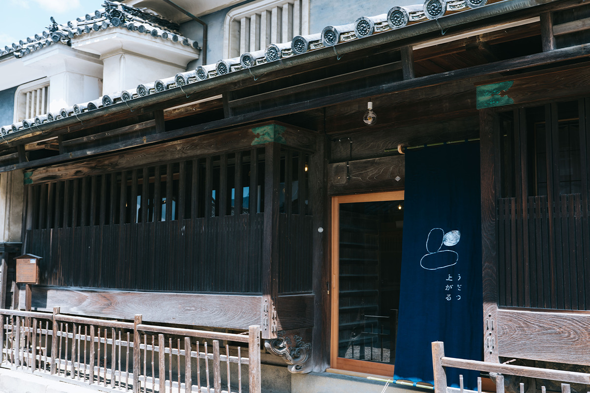
На севере префектуры Токусима, в городе Мима, стоит улица купеческих домов, которую местные жители зовут по самой заметной детали её крыш. В одном из этих домов устроено пространство, где книжная лавка соседствует с кофейней и галереей. Рассказываем, что такое удацу и как из одной усадьбы сделали общий дом.
Над фасадами купеческих домов в квартале Вакимати поднимаются удацу: небольшие стенки с отдельным навесом, которые ставили на меже с соседним домом. Сначала они защищали соседнюю крышу от огня, а со временем стали украшением и мерилом достатка: чем богаче был хозяин, тем наряднее отделан его удацу. По этой детали улица и получила своё имя.
В доме, которому около 150 лет, с 2020 года работает пространство «Удацу агару». Под одной крышей здесь собрались архитектурное бюро, книжная лавка, магазин винтажной одежды, кофейня и магазин предметов быта.
Придумал всё это Тосиаки Такахаси: он проектирует здания, торгует в собственном магазине и старается оживить район. В «Удацу агару» встречаются люди разных занятий и взглядов, одни приходят покупателями, другие продают, третьи делают вещи руками, и вместе они придумывают что-то новое.
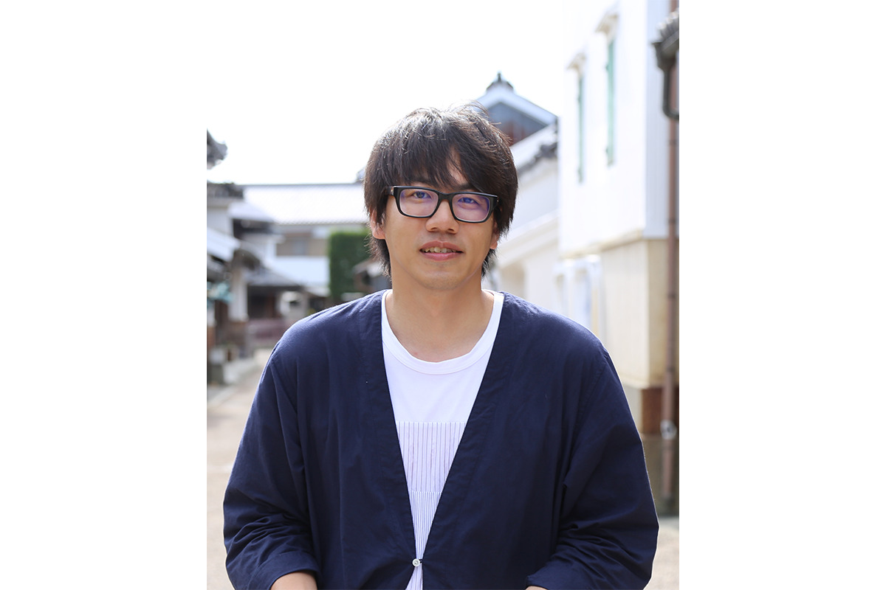
Удацу
Как индиго построило эту улицу
Вакимати вырос вокруг замка Ваки и разбогател на торговле индиго: отсюда краситель увозили по рекам на лодках. Купцы вкладывали прибыль в дома, и по фасадам до сих пор видно, кто стоял выше: черепичная кровля, оштукатуренные стены и всё более щедро отделанный удацу. Сегодня здесь под охраной государства сохраняют застройку от середины эпохи Эдо до начала эпохи Сёва, а улица тянется примерно на 450 метров.
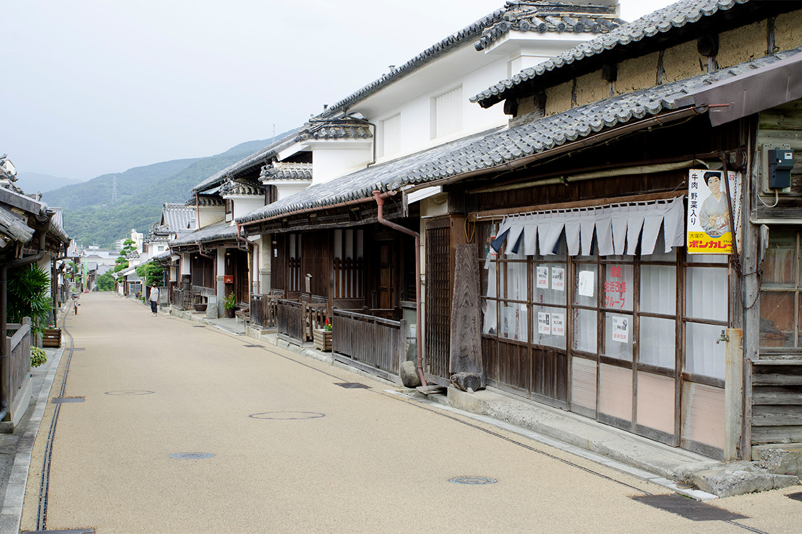
В японском есть выражение «у него удацу не поднялось»: так говорят о человеке, у которого не задалась карьера. Пошло оно оттого, что позволить себе удацу мог не каждый дом, и достаток читался прямо по крыше. На улице, где поднятых удацу десятки, эту фразу почти не услышишь.
Дома, построенные под характер места
Тосиаки Такахаси смотрит на место как на материал и проектирует дома, которые могут стоять только здесь. В их основе климат, рельеф и привычки людей, а сам он предлагает новую деревянную архитектуру.
Первый свой проект он сделал для кафе «Полстар» в горном посёлке Камикацу: длинный общий стол внутри и терраса, которая уходит к лесу за окном.
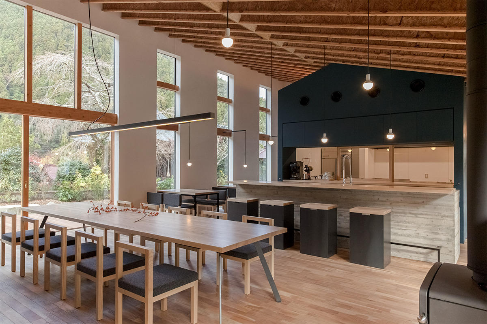
Среди других его работ HOUSE IN OASA в сельском районе среди лотосовых полей и обновлённый старый дом в Токусиме. В 2015 году Такахаси запустил магазин выходного дня WEEKEND TAKAHASHI STORE, а в 2016 году вместе с объединением TSUGI собрал показы домов и покупки в один формат под названием Lifescape.
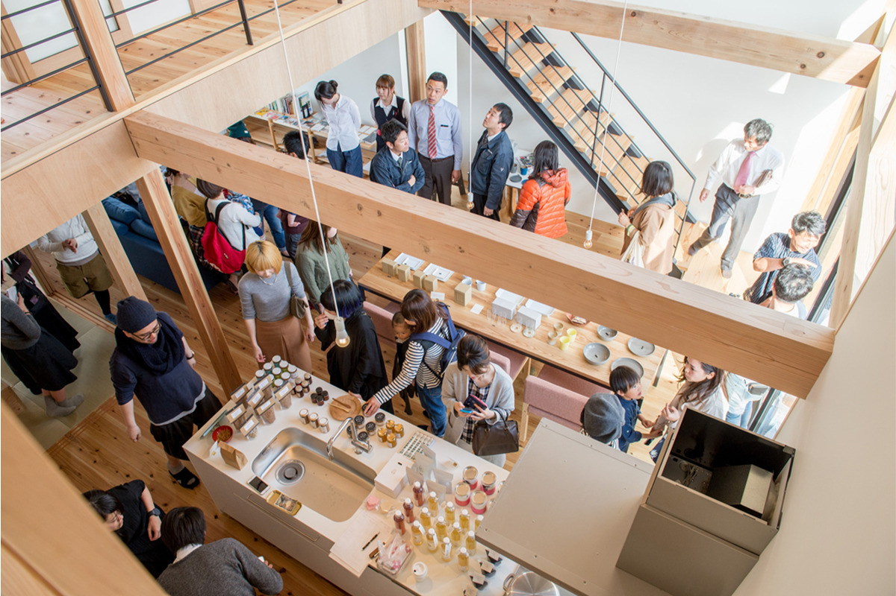
Пространство
Где встречаются люди, вещи и ремесло
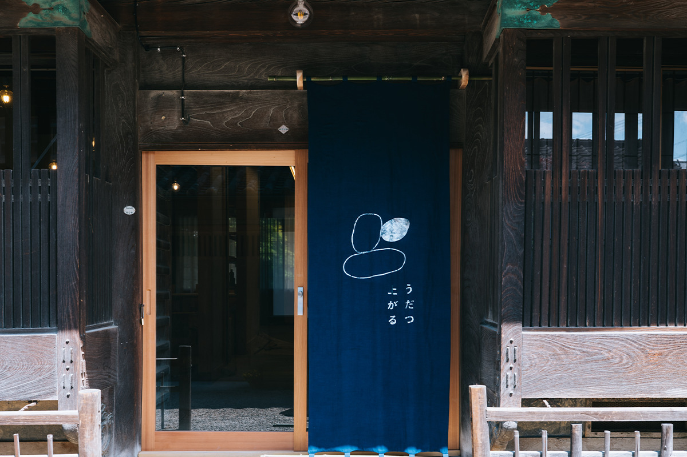
«Удацу агару» стоит прямо на охраняемой улице и собирает под своей крышей самые разные заведения: книжную лавку, кофейню, магазин одежды и предметы быта.
Хозяин магазина предметов быта сам отбирает товары. Остальные владельцы независимы друг от друга: пространство устроено так, чтобы любой человек мог начать здесь небольшое дело и постепенно его развивать.
«Квартал Вакимати, где стоит „Удацу агару“, давно стал туристическим местом Токусимы. Как архитектор я стараюсь с уважением отнестись к охраняемой зоне длиной около 450 метров и к её истории и сделать место, которое полюбят и местные жители, и гости.»
Тосиаки Такахаси
Книжная лавка Phil books
Phil books выросла из простой мысли: книгами связывать людей, события и места. В «Удацу агару» это небольшая лавка с новинками, старыми книгами и независимыми малотиражными изданиями, которые хозяин отбирает по собственному вкусу.
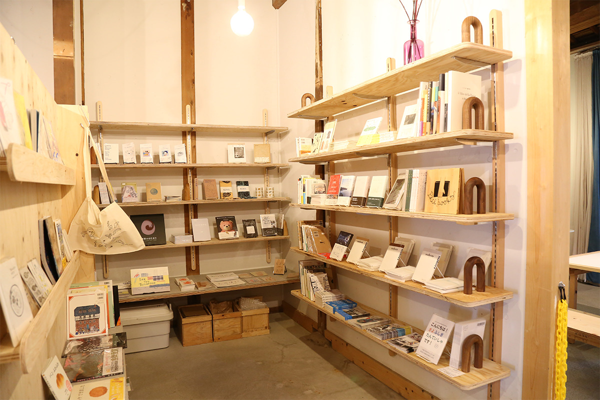
Магазин винтажной одежды used vintage gotoju
Ассортимент used vintage gotoju идёт от повседневных вещей до винтажа и архивных моделей дизайнеров, а порой добирается до товаров из магазинов телезвёзд девяностых. Магазин открыли с мыслью, что хотя бы один такой хаотичный магазин одежды в Токусиме быть должен. Книжная лавка и магазин одежды работают только в те дни, когда их хозяева свободны от другой работы.
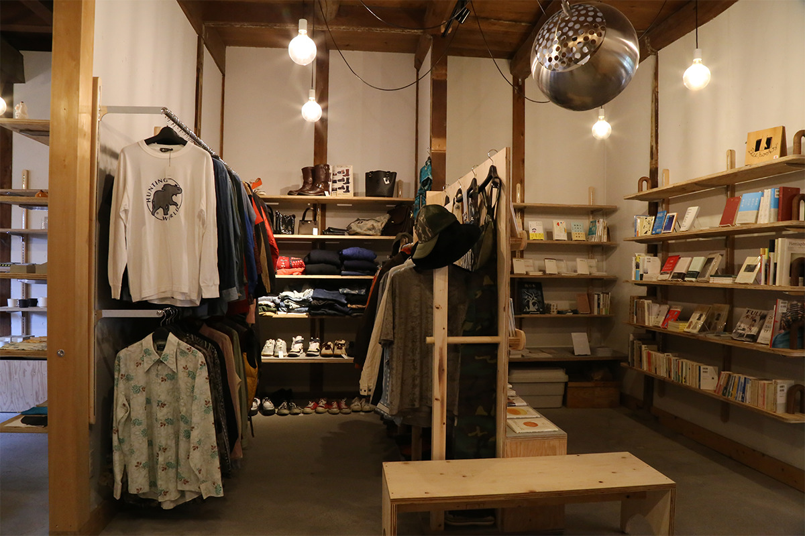
Днём кофейня, вечером общий стол
При пространстве работает общая кухня. Днём здесь открывается кофейня, которую ведут на время, а по вечерам зал собирает «Удацу агара найто». Кухню задумывали как место, где поддерживают чужое «хочу попробовать»: ей пользуются местные производители, приезжие повара и просто случайные гости. Хозяева хотят, чтобы увлечение одного отзывалось увлечением другого и чтобы то, чего не хватает в провинции, здесь всё же можно было попробовать.
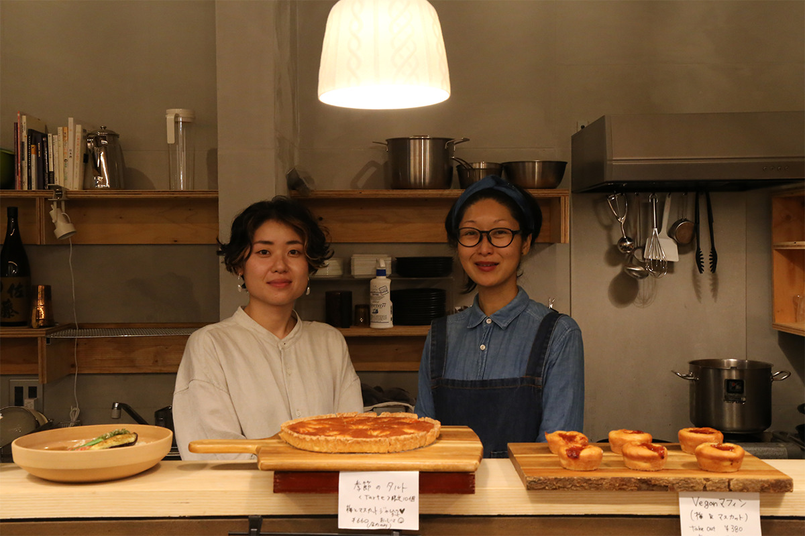
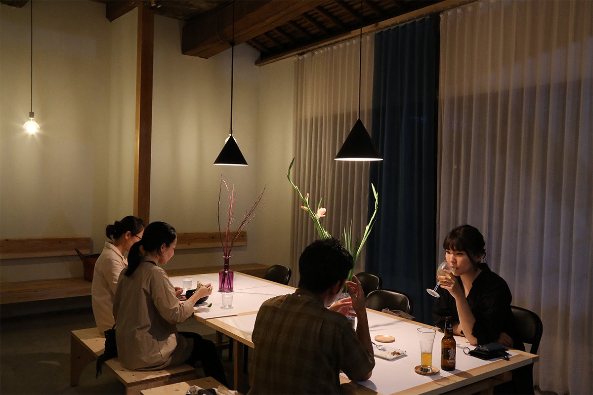
Предметы быта и мебель WEEKEND TAKAHASHI STORE
Магазин Такахаси вырос из его девиза «создавать картины богатой жизни». Здесь продают посуду, инструменты и мебель, отобранные и оформленные взглядом архитектора. На втором этаже открыт коворкинг, которым может воспользоваться кто угодно, а ещё есть помещения для галереи и событий.
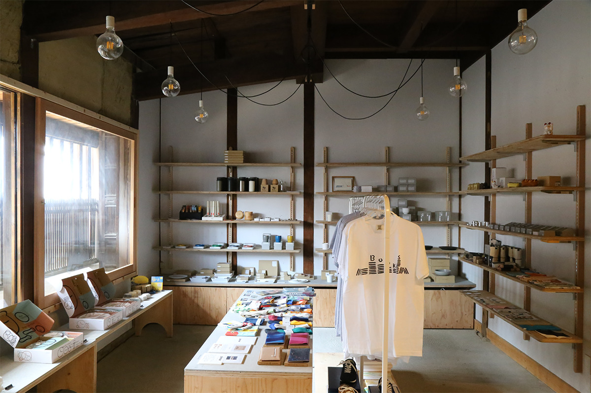
Галерея UDATSUAGARU GALLERY
На втором этаже работает галерея. Её может занять любой, от местного жителя до приезжего художника или дизайнера: задумано, что, живя рядом с разными культурами и вещами, человек расширяет свой взгляд на быт.
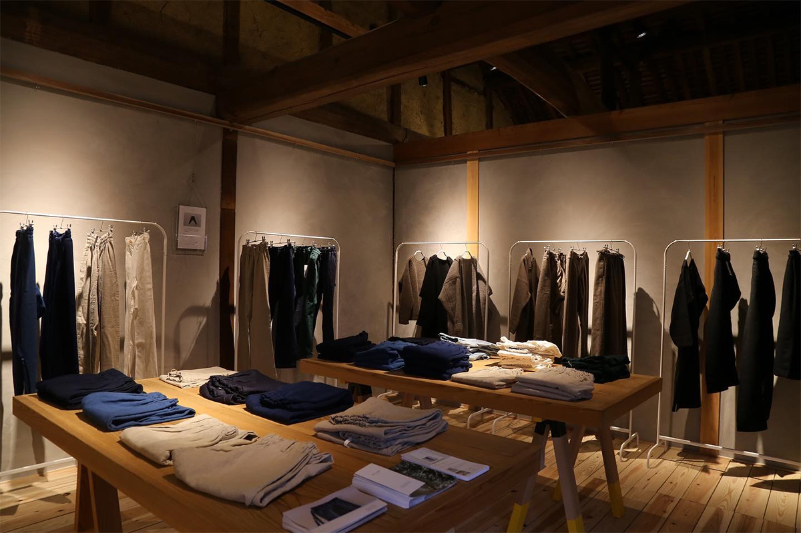
Шоурум graf awa
graf это творческое объединение из Осаки, а graf awa его офис по проектированию в Токусиме. Через три года после открытия офиса объединение переехало на второй этаж «Удацу агару», и 1 сентября 2021 года здесь заработал шоурум с мебелью и предметами собственного дизайна. К переезду привела работа объединения «Сфера экономики и культуры Сэтоути», которым руководит основатель graf. Теперь вместе с Тосиаки Такахаси здесь хотят запускать новые круговороты в Токусиме и на Сикоку и дорожить связями.
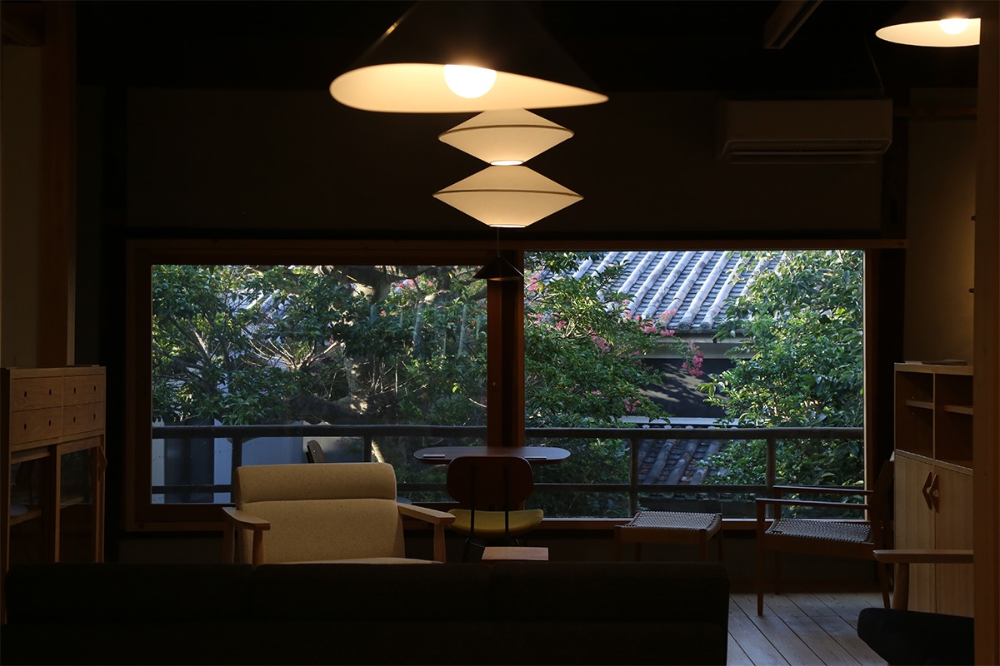
Квартал когда-то разбогател на крашении индиго, и его дома до сих пор это помнят. Гулять по улице удацу лучше не спеша: разглядывайте резные стенки над фасадами, заглядывайте во дворы и не бойтесь толкнуть дверь под синей занавеской. Добраться сюда удобно от развязки Вакимати по скоростной дороге из Токусимы или от станции Анабуки, откуда до квартала около десяти минут на такси.
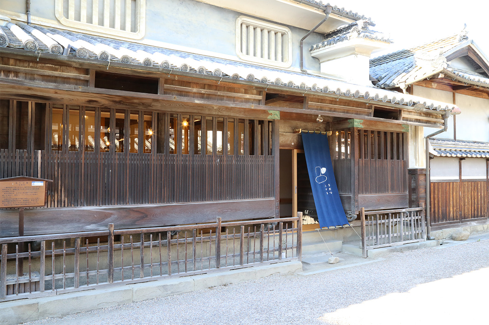
Удацу агару
- Адрес
- префектура Токусима, город Мима, квартал Вакимати, 156
- Телефон
- 050-3433-8218
- Часы работы
- 11:00–17:00
- Выходные
- вторник и среда, а также нерегулярные выходные